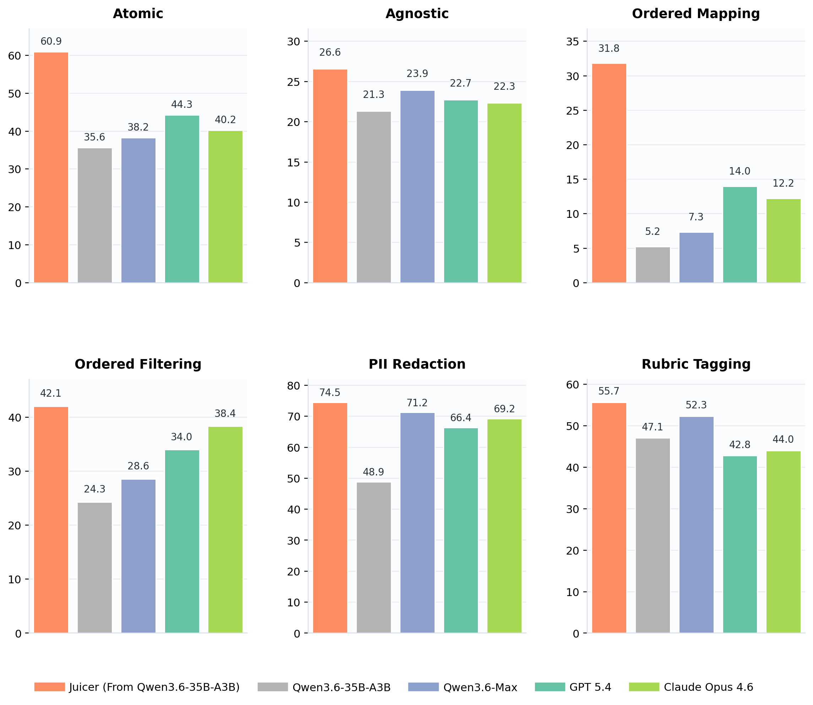

Juicer¶
自然语言驱动的数据精炼模型 · 基于 Qwen3.6-35B-A3B · 可本地部署
源码目录： data-juicer-hub/juicer_playground
Juicer 把清洗指令、过滤规则和语义打标要求转化为严格的 tagged text 或 canonical JSON 输出。它不是通用聊天模型，而是面向数据精炼工作流设计的模型。
评测基于 CDR-Bench。
主要特性¶
自然语言 recipe 执行 — 例如“删除邮箱、去重句子、规范化空白”。
顺序敏感精炼 — 能区分“先过滤再清洗”与“先清洗再过滤”，并跟踪中间状态。
结构化语义打标 — rubric 等任务可返回约定格式的 JSON。
本地部署 — 支持在本地环境中处理敏感数据。
快速开始¶
1. 启动模型¶
Juicer 不强绑特定推理框架。我们推荐将它部署为 OpenAI 兼容服务，便于 Playground 和数据处理任务调用。
推荐：vLLM 服务¶
在单张 H20（96GB）上可直接使用仓库中的启动脚本：
export MODEL_ID=/path/to/juicer-model
bash serve.sh --model "$MODEL_ID" --port 8000
可选：SGLang 服务¶
请先根据 SGLang 官方安装指南 为你的加速器环境安装 SGLang，然后启动服务：
export MODEL_ID=/path/to/juicer-model
python -m sglang.launch_server \
--model-path "$MODEL_ID" \
--served-model-name juicer \
--port 8000 \
--trust-remote-code
可选：Transformers 本地加载¶
这种方式可以直接在 Python 中调用模型，不需要启动服务：
pip install "transformers>=5.3" accelerate
export MODEL_ID=/path/to/juicer-model
import os
from transformers import AutoModelForImageTextToText, AutoTokenizer
model_id = os.environ["MODEL_ID"]
tokenizer = AutoTokenizer.from_pretrained(model_id, trust_remote_code=True)
model = AutoModelForImageTextToText.from_pretrained(
model_id,
torch_dtype="auto",
device_map="auto",
trust_remote_code=True,
)
messages = [{"role": "user", "content": "Remove email addresses from: Contact ops@example.com."}]
inputs = tokenizer.apply_chat_template(
messages,
tokenize=True,
add_generation_prompt=True,
enable_thinking=False,
return_tensors="pt",
return_dict=True,
).to(model.device)
prompt_length = inputs["input_ids"].shape[-1]
outputs = model.generate(**inputs, max_new_tokens=4096, do_sample=False)
print(tokenizer.decode(outputs[0, prompt_length:], skip_special_tokens=True))
2. 打开 Playground¶

Playground 可连接任意 OpenAI 兼容的模型服务：
pip install -r requirements.txt
export JUICER_BASE_URL=http://localhost:8000/v1
python app_zh.py
# 浏览器打开 http://localhost:7861
Playground 为无构建步骤的单页应用，包含 4 个标签页：
标签页 |
用途 |
|---|---|
试用 Juicer |
随机载入 case，或粘贴自定义文本和 recipe 执行 |
示例库 |
浏览 51 条展示用例，查看详情或载入试用页 |
能力展示 |
通过典型示例了解核心能力 |
AB 对照 |
（可选）并排对比基础模型与 Juicer |
AB 对照（可选）¶
如果有多张 GPU，可以同时启动 Juicer 和基础模型，实际体验两者在同一 recipe 上的差异。GPU 分配可根据机器情况通过脚本参数调整。
bash serve_ab.sh \
--juicer /path/to/juicer-model \
--raw /path/to/Qwen3.6-35B-A3B
export JUICER_RAW_BASE_URL=http://localhost:8001/v1
python app_zh.py
bash serve_ab.sh --stop
详细步骤见 tutorial.md。
能力¶
类型 |
含义 |
示例 |
|---|---|---|
Atomic |
单步 mapper 或 filter |
删除 URL；仅保留英文文本 |
Compositional |
一次执行多个精炼步骤 |
删除邮箱、去重、规范化空白 |
Order-sensitive |
遵循中间状态和执行顺序 |
清洗前过滤与清洗后过滤 |
Semantic |
PII 脱敏、rubric 评分和安全打标 |
替换私密标识符；输出结构化评分 |
CDR-Bench 和展示用例聚焦以下核心算子：
文本 mapper： 链接清理、注释/参考文献删除、重复句删除、空白和格式规范化
filter： 文本/词长过滤、重复比例和停用词比例过滤等
PII 算子： 联系方式、地址、时间、身份和人名脱敏
语义算子： 幻觉检测/修正、rubric 评分和分类打标
展示用例¶
cases/ 目录包含 51 条展示 case，按 CDR-Bench 能力分类：
类别 |
文件 |
条数 |
内容 |
|---|---|---|---|
原子 Mapper |
|
6 |
单步文本变换 |
原子 Filter |
|
5 |
单步过滤决策 |
PII 脱敏 |
|
10 |
人名/联系方式/地址/证件/时间脱敏 |
幻觉检测 |
|
5 |
幻觉检测与修正 |
质量评分 |
|
4 |
HelpSteer2 维度评分 |
安全分类 |
|
6 |
Aegis 安全分类 |
顺序敏感 |
|
8 |
多算子顺序执行 |
组合操作 |
|
7 |
多步端到端流程 |
所有 case 共用统一 schema，详见 cases/README.md。
代码调用¶
python examples/single_clean.py # 单条调用
python examples/batch_clean.py # 批量清洗
python examples/pii_redact.py # PII 脱敏
adapter.py 提供 build_prompt_from_row(row) 和 parse_output(text, output_format) 等 API，详见 examples/README.md。
模型概览¶
项目 |
说明 |
|---|---|
基础模型 |
|
架构 |
Qwen3.6 MoE causal LM；35B 总参数 / 3B 激活参数 |
输出约定 |
Tagged text 或任务特定的 canonical JSON |
已评估服务长度 |
32,768 tokens |
继承的上下文配置 |
262,144 tokens；32K 以上质量未评估 |
服务框架支持时，可通过
chat_template_kwargs.enable_thinking=false关闭 thinking。
评测摘要¶

局限性¶
32K tokens 以上的数据精炼质量尚未评估。
在高精度或合规关键场景中，不应直接取代确定性工具和人工审核。
引用¶
@misc{juicer2026,
title = {Juicer: Natural-Language Data Refinement with Qwen3.6-35B-A3B},
author = {Juicer Contributors},
year = {2026},
howpublished = {Hugging Face model release}
}
Juicer 基于 Qwen3.6-35B-A3B，并使用了 CDR-Bench、Data-Juicer 和 Trinity-RFT。
许可证¶
Apache License 2.0，继承自 Qwen3.6-35B-A3B 基础模型。